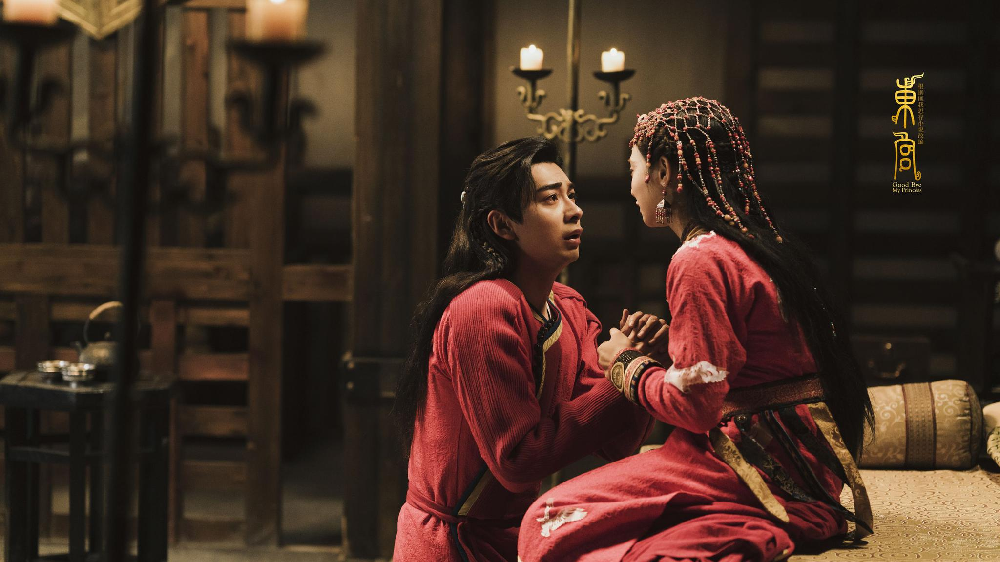
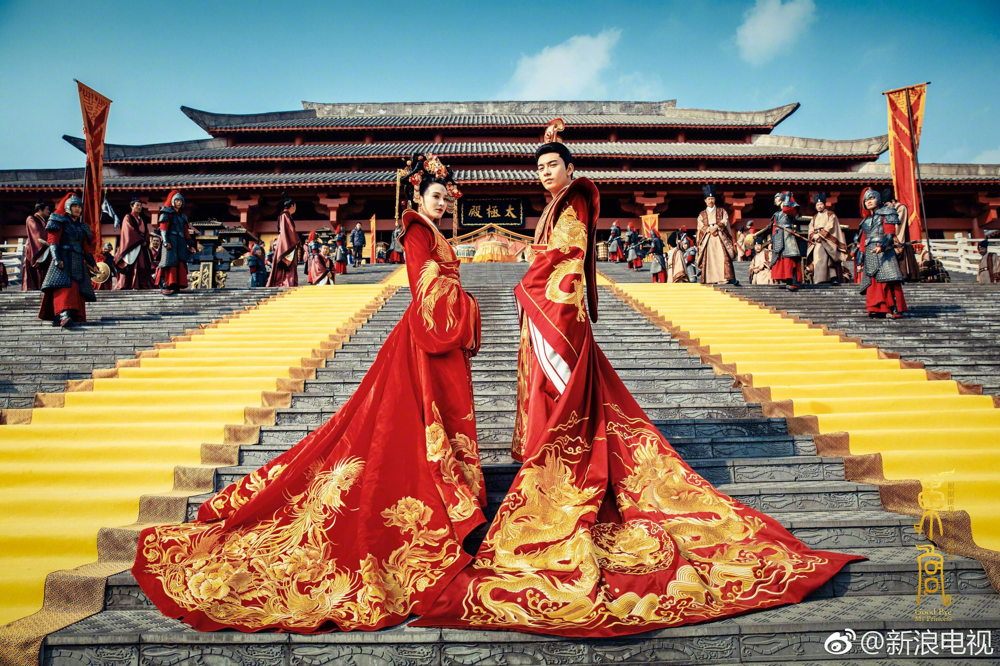

October 15 2021
相片集說明


相片集的八張相片是東宮的劇照!
東宮是一部以悲劇收尾的中國大陸古裝電視劇，男主角是中原五皇子，女主角是西州九公主， 男女主角在丹斥相遇，男主角為了爭奪皇位欺騙女主角與其一族，並在大婚之日舉兵攻入，滅女主角一族， 從此男女主角有了不共戴天之仇。
女主角發現男主角欺騙她之後，就逃回母族，卻發現母親自刎，父親被逼瘋， 因此痛恨男主角，決意跳下忘川，永生永世忘了男主角。